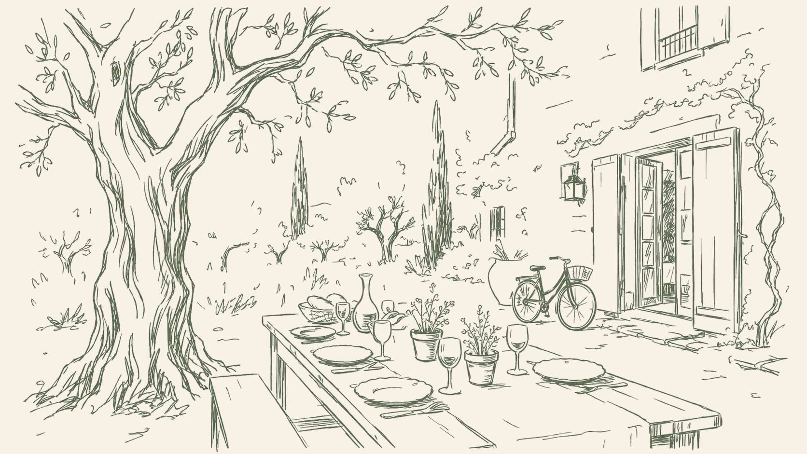
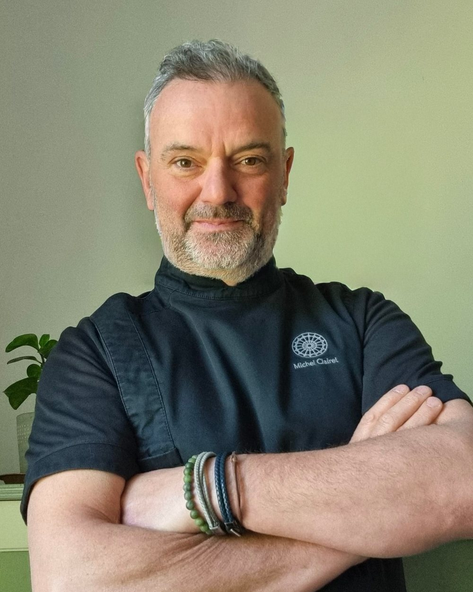
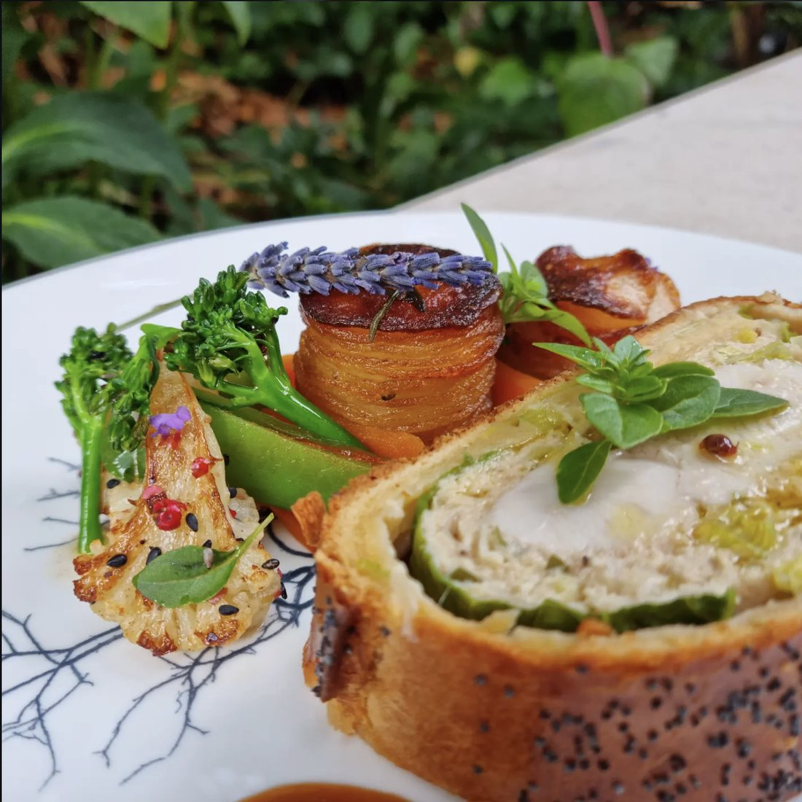
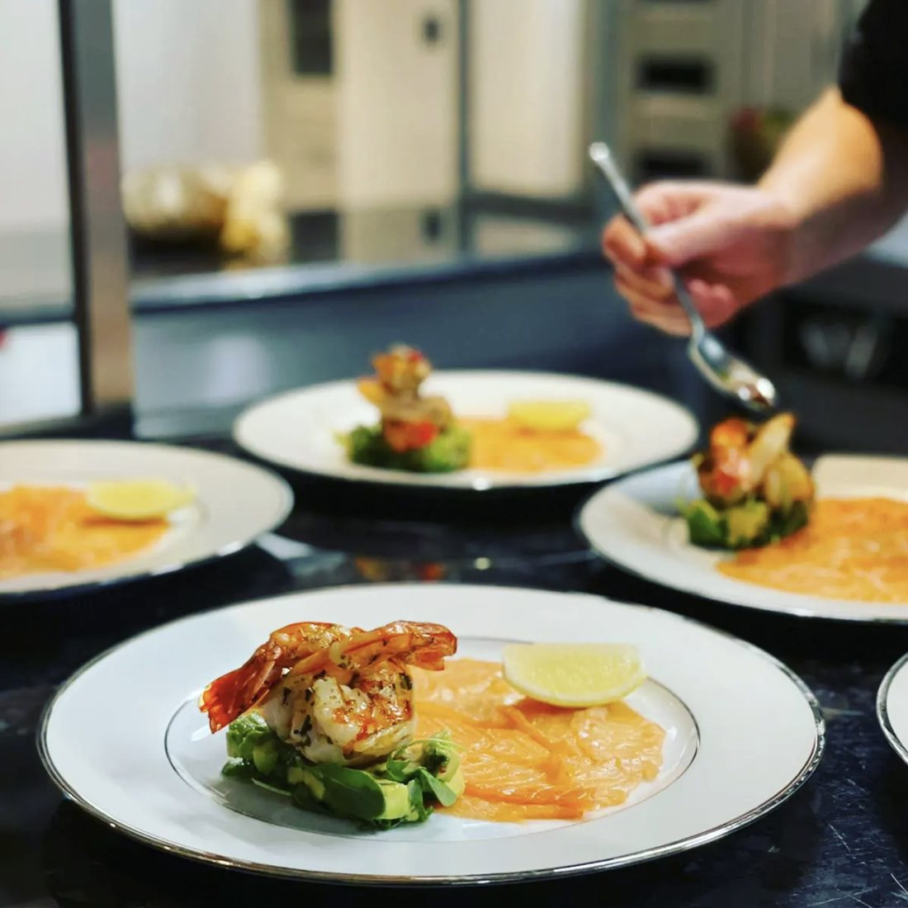
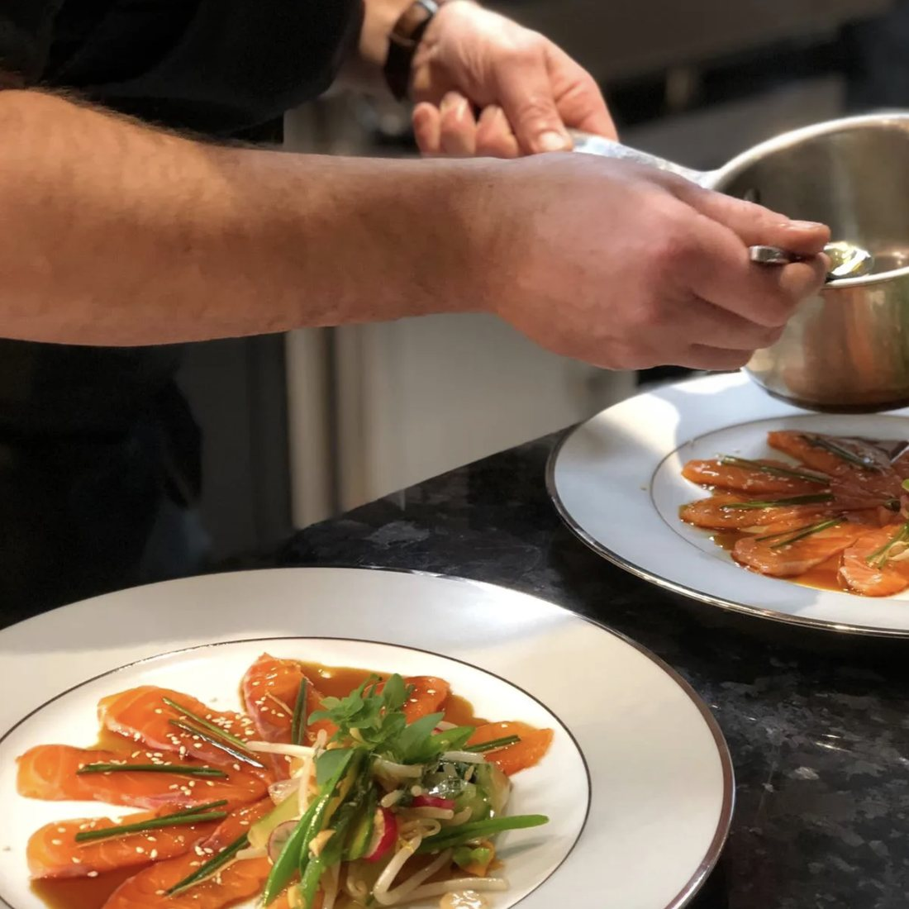
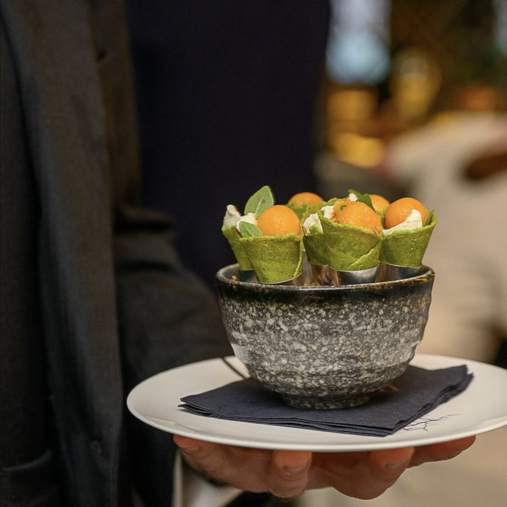
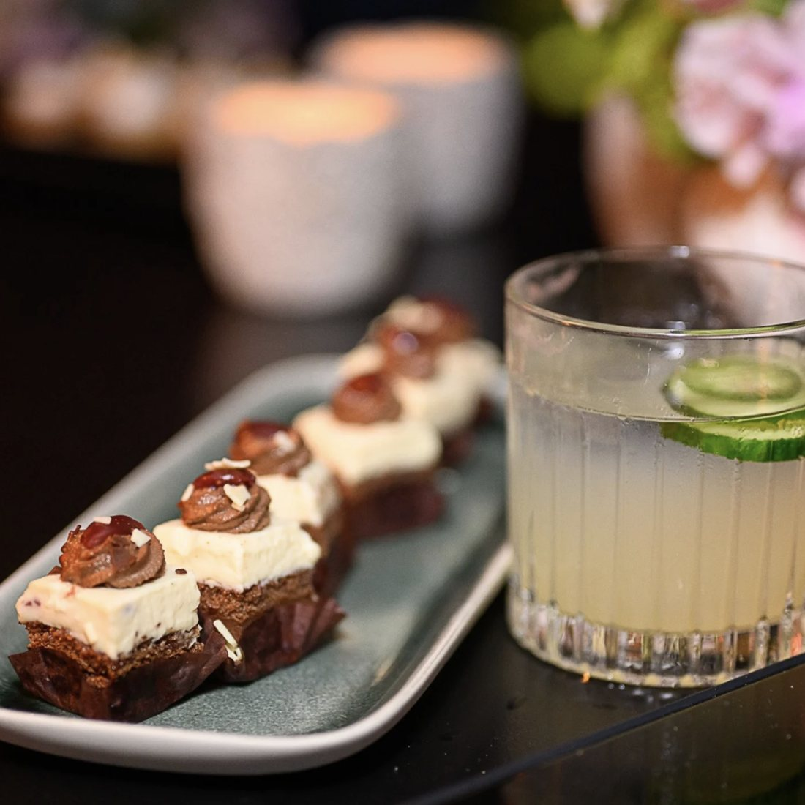

Three Michelin star kitchens, the Cannes seafront, and London families since 2008. Michel cooks for tables of four as gladly as for parties of a hundred.
From a family supper to a wedding for a hundred guests, every table is welcome. Menus follow your tastes, your budget and the season.
Michel
I grew up between the market and the stove in the South of France, where a meal is a long afternoon rather than a service. I trained in three Michelin star kitchens, cooked the Cannes seafront through its summers, and have been feeding London households since 2008.
I work alone or with a brigade, in your kitchen, with your suppliers if you prefer. We write the menu together and the market decides the rest. Allergies, diets and children are part of the conversation from the first call, never an afterthought.
What I bring to a house is not a signature style. It is thirty years of knowing what a table needs, and the patience to cook it quietly.
MichelTexte provisoire, à réécrire à partir du CV de Michel.
A dinner party at home, from menu to table service.
→Weekly menus and honest seasonal cooking for busy households.
→Canapes, buffets or seated dinners, up to a hundred guests and more.
→Seasonal or permanent service within your household.
→




Témoignage à venir. Un mot de clients ou de familles, recueilli par Michel.
A London familyThe occasion, the date, the number of guests, any allergies or preferences. Michel reads and answers every enquiry himself.